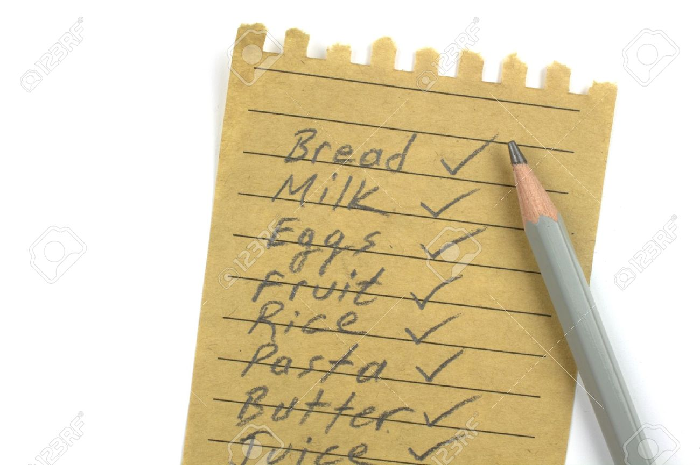

Jennaralll Creations
My GWC Journey
About Me
My name is Jenna, and am a rising junior at Lowell High School. I love watching k-dramas and t.v shows such as American Horror Story and Once Upon a Time in my free-time, along with drawing, listening to k-pop, and playing MOBAs online. I play badminton and dragonboat on the weekends and afterschool. I'm the president of a club at my school called P.A.W.S, and our main purpose is to provide for animals without shelter, which is what the acronym stands for. I will be taking AP Computer Science in the fall semester. I hope to learn new things this summer that may benefit or aid in my future courses. Through Girls Who Code, I have made many connections, as well as getting to create new programs and making them run, making my whole summer experience 110% better!
Scratch
Square
In this program, we programmed our sprite to move with a pen to create a square. Finishing early, and seeing that we were nearing july 4th, I created two squares and repeated it three times for each different color (red and blue) so that it resembled fireworks displayed during the Independence Day.
Pig
In pairs, we programmed a dice game called pig. Every time that a player rolls in Pig, they have to make a decision about their next move that could cost them the win. If they have rolled any number from a 2 to a 6, they are free to collect points that are equal to the face value of their roll and they can roll again, or they can decide to take the points and hold, handing the die over to the next player. If the player makes the call to decide to roll again and a 1 comes up, the points that they had from their initial roll are taken away, their turn is over, and their score for that round is a zero. For as long as they don’t roll a 1 though, the player can continue to throw the dice and to accumulate points. The players take turns this way until one of them reaches 100 points and is declared the winner.
Python
Text Adventure

For this program, we worked in partners and created a Disney-based adventure. My partner and I researched online for map of Disneyland California Adventure Park, and navigated through the map for the beginning to end for a planned escape route.
Grocery List

Grocery lists are conveniently written out, but what if you had an online program that allows you to create, design, and add things to your list whenever you want with your input? That's exactly what we created in this program -- the grocery list that we created allowed the user to name their list, along with what they wanted to add and the amount they needed of that certain object. It prompted for user input as long as they didn't "quit" the program.
Pygame
Bouncing Ball
Individually, we coded a program of a bouncing ball. The ball bounced off the edges of the screen, and continually bounced our screen for our amusement. We added several if statements for the x and y axis so that the ball wouldn't move past the edges of the screen, and instead, bounce off it in a random angle degree. For the ball to be continually moving, the x and y position of the ball must be constantly increasing, which we increased by the speed, which we defined as 3.
Snow Animation
In pairs, we created an animation of falling snow. Taking into perspective the constantly changing y axis of this program, as well as the x position for which each snow object spawns, we succesfully created the animation with a struggles here and there. As a stretch challenge, we had to add a background, which we imported from Google images and used our online resources efficiently to learn how to add it in.